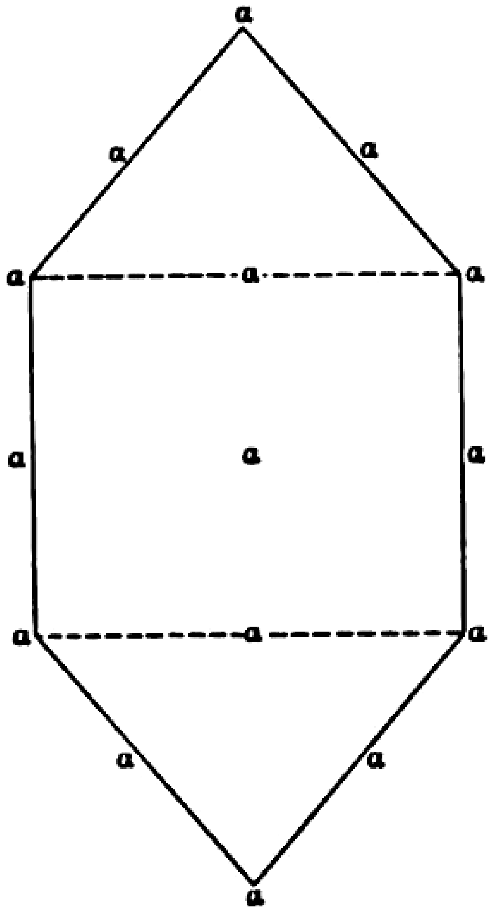
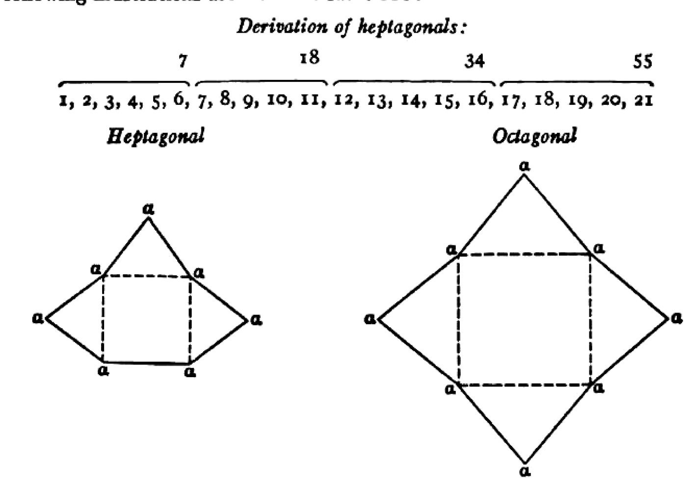

Chapter 11: Hexagonal, Heptagonal, and Higher Polygonal Numbers¶


1. The hexagonal, heptagonal, and succeeding numbers will be set forth in their series by following the same process, if from the natural series of number there be set forth series with their differences increasing by 1. For as the triangular number was produced by admitting into the summation the terms that differ by 1 and do not pass over any in the series; as the square was made by adding the terms that differ by 2 and are one place apart, and the pentagon similarly by adding terms with a difference of 3 and two places apart (and we have demonstrated these, by setting forth examples both of them and of the polygonal numbers made from them), so likewise the hexagons will have as their gnomons (root-numbers) those which differ by 4 and are three places apart in the series, which added together in succession will produce the hexagons. For example, 1, 5, 9, 13, 17, 21, and so on; so that the hexagonal numbers produced will be 1, 6, 15, 28, 45, 66, and so on, as far as one wishes to go.
2. The heptagonals, which follow these, have as their root-numbers terms differing by 5 and four places apart in the series, like 1, 6, 11, 16, 21, 26, 31, 36, and so on. The heptagons that thus arise are 1, 7, 18, 34, 55, 81, 112, 148, and so forth.
f. 0262 · p. 246

3. The octagonals increase after the same fashion, with a difference of 6 in their root-numbers and corresponding variation in their total constitution.
4. In order that, as you survey all cases, you may have a rule generally applicable, note that the root-numbers of any polygonal differ by 2 less than the number of the angles shown by the name of the polygonal—that is, by 1 in the triangle, 2 in the square, 3 in the pentagon, 4 in the hexagon, 5 in the heptagon, and so on, with similar increase.